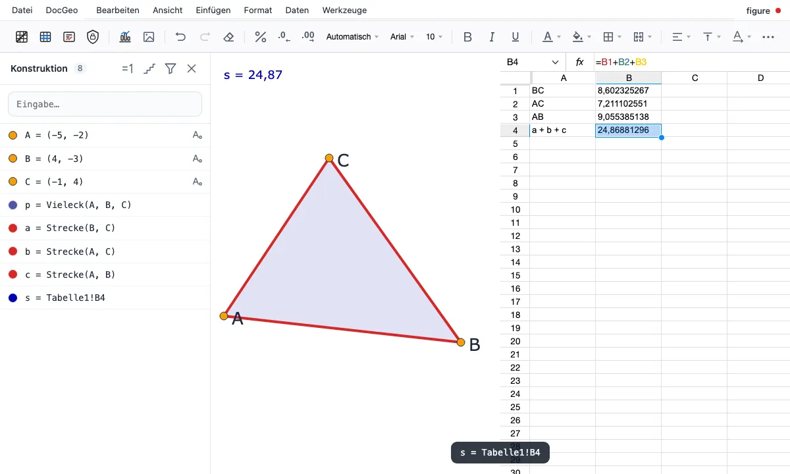

Die Tabellenkalkulation
Ein Tab von DocGeo kann ein Tabellenblatt von DocCells enthalten, der Tabellenkalkulation von DocTools: neben der Figur oder allein in einem eigenen Tab. Figur und Zellen lesen sich gegenseitig, live.

Im Beispiel oben:
-
Die Zellen B1 bis B3 lesen die Längen der Dreiecksseiten a,
b und c:
=GEO("a")…; - B4 bildet ihre Summe:
=B1+B2+B3; -
Die Figur liest diese Summe mit der Zeile
s = !B4zurück.
Zieht man A, B oder C, folgen die Zellen und
s während der Bewegung.
Eine Tabellenkalkulation hinzufügen
| Aktion | Wie |
|---|---|
| Neben der Figur | Datei › Ansicht › Neue Tabellenansicht: eine Spalte mehr, rechts, mit einem leeren Blatt; die Spalten werden gleich breit (mehrere Ansichten) |
| In einem eigenen Tab | Datei › Neuer Tabellen-Tab: ein Tab „Tabelle1“, „Tabelle2“…, der nur ein Blatt enthält (Arbeitsmappen) |
| Größe ändern, verschieben | die Trennlinie der Spalten ziehen; Datei › Ansicht › Ansicht nach links verschieben oder nach rechts, solange die Tabellenansicht aktiv ist |
| Löschen | Datei › Ansicht › Tabellenansicht löschen: Ansicht und Zellen verschwinden, die Figur nimmt den Platz wieder ein. Ein Tabellen-Tab wird wie jeder Tab gelöscht. |
- Ein Tab hat höchstens eine Tabellenansicht: Neue Tabellenansicht ist ausgegraut, wenn er schon eine hat.
- Eine Tabellenansicht zeigt ein einziges Blatt, ohne Blattregister. Für mehrere Blätter legt man mehrere Tabellen-Tabs an, die sich gegenseitig lesen (siehe unten).
- Hinzufügen und Löschen einer Tabellenansicht lassen sich rückgängig machen, wie die anderen Aktionen an Ansichten.
Menüs und Schaltflächen der Tabellenkalkulation
Ein Klick oder eine Eingabe in den Zellen macht die Tabellenansicht aktiv. Die Leisten von DocGeo weichen dann denen der Tabellenkalkulation, in gleicher Höhe: darunter verschiebt sich nichts.
- Die Menüleiste behält Datei, gefolgt vom Menü DocGeo, dann den Menüs der Tabellenkalkulation.
- Die Schaltflächenleiste der Tabellenkalkulation (Zahlenformat, Schrift, Fett, Farben, Rahmen, Ausrichtung…) ersetzt die Aktionsleiste von DocGeo.
- Das Menü DocGeo bietet, was nützlich bleibt: Konstruktionsverlauf, Werkzeugpalette, Eigenschaften und das Benutzerhandbuch.
- Ein Klick in die Figur oder in das Feld „Konstruktion“, eine dort eingegebene Zeile oder ein Tabwechsel bringt die Leisten von DocGeo zurück. In einem Tabellen-Tab bleiben die Leisten der Tabellenkalkulation.
- Ein Dialog der Tabellenkalkulation (bedingte Formatierung, Zahlenformat…) verschleiert das ganze Fenster von DocGeo, bis er geschlossen wird.
Das Feld „Konstruktion“ bleibt in einem Tabellen-Tab verfügbar (DocGeo › Konstruktionsverlauf): Ein dort eingegebenes Objekt wird berechnet, aber nicht gezeichnet, und die Zellen dieses Tabs können es lesen.
Ist DocGeo in eine andere Seite eingebettet, etwa in DocTools, hat es keine Menüleiste: Die Tabellenkalkulation behält ihre Leisten oben in ihrer Spalte.
Die Figur liest die Zellen
Eine Formel der Figur bezeichnet eine Zelle der Tabellenansicht
des Tabs mit einem Ausrufezeichen, gefolgt von der Adresse der
Zelle: !B3.
| Schreibweise | Wert |
|---|---|
!B3 |
die Zelle B3 |
!B2:B21 |
ein Bereich aus einer Zeile oder Spalte: eine Liste von Werten |
!A1:C3 |
ein Rechteck: eine Liste von Zeilen, jede eine Liste |
Tabelle1!B3 |
die Zelle B3 eines Tabellen-Tabs |
'Figur 1'!!B3 |
die Zelle B3 der Tabellenansicht eines anderen Tabs |
A = (!B1, !B2)
r = !B3
L = !A1:A10-
Die Adresse besteht aus Großbuchstaben, dann Ziffern
(
B3,AA12), ohne$, direkt nach dem Ausrufezeichen. Die Negation eines Objekts namens A1 schreibt man!(A1). -
Eine Zahl, ein Text, ein Wahrheitswert oder eine Liste wird
unverändert gelesen; ein Datum als Zahl. Eine Zelle enthält
eine Liste, in eckigen Klammern eingegeben,
[2; 1], oder berechnet:=[2; 1]*3. Eine leere Zelle oder eine Zelle mit Fehler (#DIV/0!…) ergibt einen undefinierten Wert: Das Objekt, das sie liest, wird nicht gezeichnet. - Sobald sich eine Zelle ändert, durch eine Eingabe oder durch die Berechnung der Tabelle, werden die Objekte, die sie lesen, neu berechnet und neu gezeichnet.
- Ein Bezug ist nur ein Teil einer Formel: Er erzeugt kein Objekt. Ein aus den Zellen gelesener Punkt wie A oben ist berechnet: Er lässt sich nicht mit der Maus ziehen. Um ihn zu bewegen, ändert man die Zellen.
Die Zellen eines anderen Tabs
Der Name des Tabs steht vorn, in Apostrophen, wenn er ein Leer-
oder Sonderzeichen enthält, wie beim
Lesen eines anderen Tabs: Tabelle1!B3. Hat dieser Tab auch eine Figur, verdoppelt
man das Ausrufezeichen, 'Figur 1'!!B3, denn
'Figur 1'!B3 bezeichnet das Objekt B3 seiner Figur.
Seine Zellen werden so gelesen, wie sie beim Verlassen dieses
Tabs berechnet waren.
Die Zellen lesen die Figur: GEO
In einer Zelle liest die Funktion GEO den Wert
eines Objekts der Figur, dessen Name in Anführungszeichen steht.
=GEO("c")
=GEO("'Figur 1'!c")
=2*GEO("r")+1- Der Wert ist der, den eine Formel der Figur über den Namen des Objekts lesen würde: Länge einer Strecke, Wert eines Ausdrucks oder Schiebereglers, Text, Zustand eines Kontrollkästchens… Er folgt der Figur, während man sie bewegt.
-
Ein Punkt wird als Liste seiner Koordinaten gelesen:
=GEO("A")ergibt[1; 2], mit der man wie mit einer Liste rechnet:=GEO("A")*2. -
Ein unbekanntes oder undefiniertes Objekt, oder eines, das
weder Zahl noch Text noch Wahrheitswert noch Punkt noch Liste ist, ergibt
#N/A. Der Name muss in der Formel stehen:=GEO(A1)ergibt#VALUE!. -
GEO("'Figur 1'!c")liest das Objekt c eines anderen Tabs: So liest ein Tabellen-Tab eine Figur. -
GEOheißt in allen Sprachen gleich. Es gibt die Funktion nur in DocGeo: In DocCells allein ergibt sie#N/A.
Zirkelbezug
Ein von GEO gelesenes Objekt kann nicht von einer
Zelle abhängen, die von ihm abhängt. Enthält A1 die
Formel =GEO("m")+1, wird die Neudefinition von m
durch die Zeile m = !A1 abgelehnt:
„Zirkelbezug: !A1“.
Ebenso wird eine Zellformel, die einen Kreis mit der Figur schließen würde, mit dieser Meldung zurückgenommen, und die Zellen erhalten ihren vorherigen Inhalt zurück. In einer Datei, die dennoch einen Kreis enthält, ist der Lesezugriff, der ihn schließt, undefiniert.
Rückgängig und Speichern
- Die Zellen haben ihr eigenes Rückgängig: Strg Z in den Zellen oder die Menüs der Tabellenkalkulation. Die Schaltflächen von DocGeo machen keine Eingabe in der Tabelle rückgängig.
-
Zellen, Formeln und Formatierung werden mit der Figur in
derselben
.dgo-Datei gespeichert. Strg S in den Zellen oder Datei › Speichern speichert alles.
Für Schülerinnen und Schüler
Der Player von DocGeo zeigt das Blatt, wie eine in eine Webseite eingebettete Figur, ohne Menüs und Schaltflächen, mit seiner Formelleiste.
- Schülerinnen und Schüler können in die Zellen schreiben, wie in ein Eingabefeld: Die Figur folgt.
- Die Schaltfläche zum Zurücksetzen stellt die Zellen so wieder her, wie sie gespeichert waren.
- Diese Eingaben gehören nicht zur Antwort, die eine einbettende Seite festhält: Nur die Objekte der Figur gehören dazu.
Die Tabellenkalkulation ist eine eigene Anwendung, die nur
geladen wird, wenn der angezeigte Tab eine hat. Auf einer
Website mit eigener Kopie von DocGeo muss der Ordner
doccells neben dem Ordner von DocGeo veröffentlicht
sein; sonst zeigt die Tabellenansicht „⚠ DocCells“, und der Rest
der Figur funktioniert.